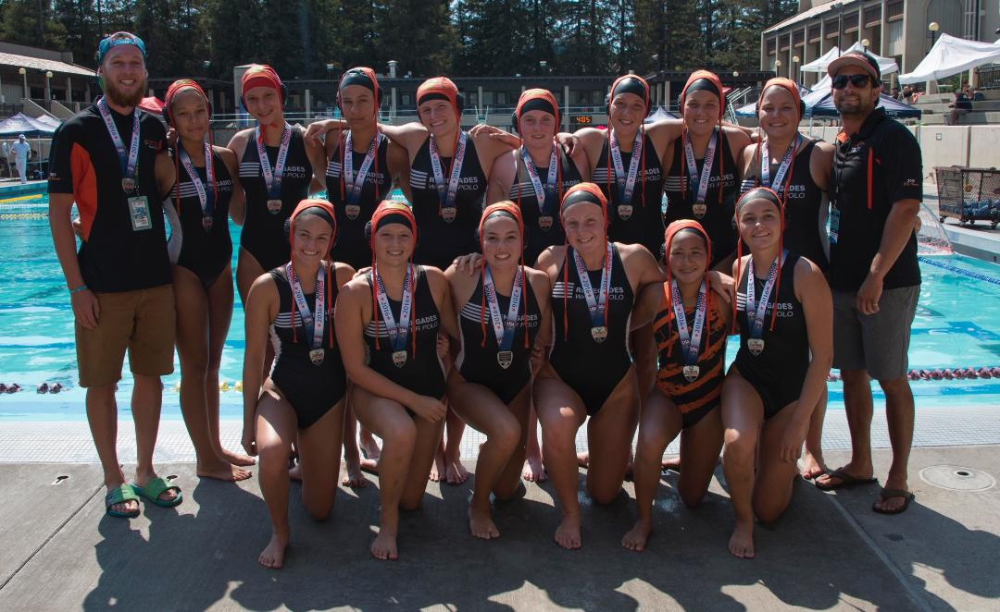

John Anderson has been a high school head water polo coach since 2005. In that time he has coached 15 seasons which have resulted in 3 league championship teams, 12 CIF qualifying teams, and has advanced as far as CIF quarter finals on four different occasions. John graduated from the University of Redlands, where he swam and played water polo. Currently, Coach Anderson is the acting head coach at Cajon for boy and girls water polo as well as swim.
